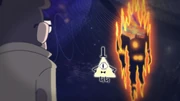

- Sobre
- Historia

Bill Cipher era um demônio interdimensional triangular, anteriormente existente apenas na paisagem mental antes de obter acesso ao mundo real. Ele estava correndo loucamente em Gravity Falls, Oregon desde que foi convocado por Stanford Pines há mais de trinta anos e também era conhecido por seu comportamento misterioso e humor sádico. Bill é o principal antagonista da série .
